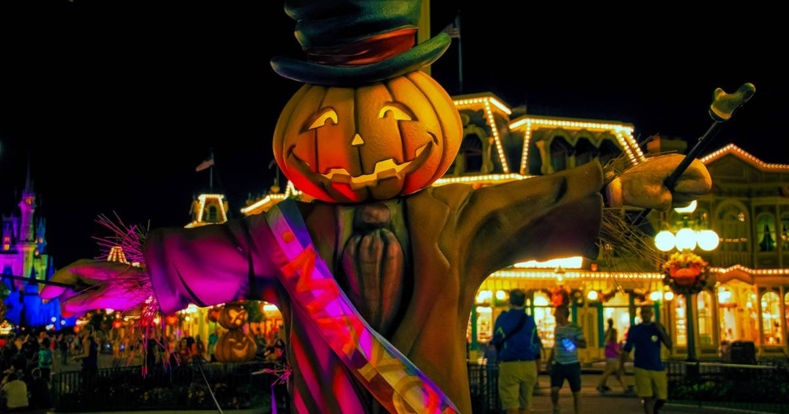

Home National Football Museum Halloween Events Manchester Christmas Market Family Events
Halloween – traditionally written as Hallowe’en – marks a time to welcome the darker evenings as we approach winter. In Tudor times, this was an opportunity to pray for the souls of the departed, and people would ring bells to help trapped souls in purgatory move on to their final resting places. To remember those who have moved on to the other side, offerings of flowers and lighted candles are traditionally left on All Hallows’ Eve (or All Soul’s Night). The Halloween festival is thought to have its origins in an older Celtic festival, Samhain, which marks the end of the harvest season.
